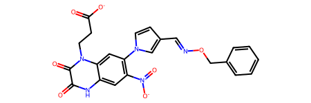
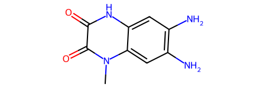

from rdkit.Chem import Draw
from rdkit.Chem.Draw import IPythonConsole
from rdkit import Chem
from rdkit.Chem import rdDistGeom
from rdkit.Chem import rdMolAlign
import rdkit
print(rdkit.__version__)2022.09.4This one came up during a conversation with Felix Pultar, a postdoc in the group, and I thought it made for a nice blog post, so here we go.
One common workflow in conformational analysis is to generate a bunch of conformers for a molecule and then find a representative subset by clustering them.
The RDKit has everything required to do this, but there’s not all that much info out there showing how to do it.
This blog post aims to change that.
from rdkit.Chem import Draw
from rdkit.Chem.Draw import IPythonConsole
from rdkit import Chem
from rdkit.Chem import rdDistGeom
from rdkit.Chem import rdMolAlign
import rdkit
print(rdkit.__version__)2022.09.4Start by constructing a molecule and then generating a set of 300 conformers for it using ETKDGv3.
# modified CHEMBL12747, ionized
m = Chem.MolFromSmiles('O=C([O-])CCn1c(=O)c(=O)[nH]c2cc([N+](=O)[O-])c(-n3ccc(C=NOCc4ccccc4)c3)cc21')
m
mh = Chem.AddHs(m)
ps = rdDistGeom.ETKDGv3()
ps.randomSeed = 0xd06f00d
ps.numThreads = 10
cids = rdDistGeom.EmbedMultipleConfs(mh,300,ps)
len(cids)300Remove Hs from the molecule at this point because they aren’t particularly informative for the rest of the analysis and they just make things more difficult
m3d = Chem.RemoveHs(mh)Find a pair of conformers with a decent size mismatch between the direct alignment (which does not take symmetry into account) and the best alignment (which does):
maxd = -100
for j in range(0,5):
for i in range(j,len(cids)):
d1 = rdMolAlign.AlignMol(m3d,m3d,prbCid=cids[i],refCid=cids[j])
d2 = rdMolAlign.GetBestRMS(m3d,m3d,prbId=cids[i],refId=cids[j])
delt = d1-d2
if delt<-1e-5:
print(f'ooops, {i}, {delt}')
if delt>maxd:
maxd = delt
maxi = i
maxj = j
d1 = rdMolAlign.AlignMol(m3d,m3d,prbCid=cids[maxi],refCid=cids[maxj])
d2 = rdMolAlign.GetBestRMS(m3d,m3d,prbId=cids[maxi],refId=cids[maxj])
print(maxi,maxd,d1,d2)282 0.703433090406554 1.0038182177331938 0.3003851273604343Now show those two conformers:
import py3Dmol
def drawit(m, cids=[-1], p=None, removeHs=True,
colors=('cyanCarbon','redCarbon','blueCarbon','magentaCarbon','whiteCarbon','purpleCarbon')):
if removeHs:
m = Chem.RemoveHs(m)
if p is None:
p = py3Dmol.view(width=400, height=400)
p.removeAllModels()
for i,cid in enumerate(cids):
IPythonConsole.addMolToView(m,p,confId=cid)
for i,cid in enumerate(cids):
p.setStyle({'model':i,},
{'stick':{'colorscheme':colors[i%len(colors)]}})
p.zoomTo()
return p.show()Here are the two conformers aligned using the atom indices:
d1 = rdMolAlign.AlignMol(m3d,m3d,prbCid=cids[maxi],refCid=cids[maxj])
drawit(m3d,[cids[maxj],cids[maxi]])You appear to be running in JupyterLab (or JavaScript failed to load for some other reason). You need to install the 3dmol extension:
jupyter labextension install jupyterlab_3dmol
And then aligned with GetBestRMS:
d2 = rdMolAlign.GetBestRMS(m3d,m3d,prbId=cids[maxi],refId=cids[maxj])
drawit(m3d,[cids[maxj],cids[maxi]])You appear to be running in JupyterLab (or JavaScript failed to load for some other reason). You need to install the 3dmol extension:
jupyter labextension install jupyterlab_3dmol
The alignments don’t actually look all that different. The difference in RMSD is due to the atoms in the nitro group and the terminal phenyl ring: GetBestRMS() recognizes that the symmetry while AlignMol() just matches atoms by their indices.
Now generate the RMSD distance matrix using GetBestRMS(). Note that as of the 2022.09 release cycle the convenience function AllChem.GetConformerRMSMatrix() does not take symmetry into account, so we need to build the symmetric matrix (we just store the lower triangle) manually:
dists = []
for i in range(len(cids)):
for j in range(i):
dists.append(rdMolAlign.GetBestRMS(m3d,m3d,i,j))Now we can do Butina clustering. We use a distance threshold of 1.5 Å:
from rdkit.ML.Cluster import Butina
clusts = Butina.ClusterData(dists, len(cids), 1.5, isDistData=True, reordering=True)
len(clusts)10That’s it. The 300 conformers form 10 clusters. Let’s visualize the centroids (the first conformer in each cluster)
To make visualization of the clusters easier to interpret, align all the conformers to the rigid 6-6 core:
m
core = Chem.MolFromSmiles('O=C1C(=O)N(C)c2cc(N)c(N)cc2N1')
core
rdMolAlign.AlignMolConformers(m3d,atomIds = m3d.GetSubstructMatch(core))Now look at the first five cluster centroids;
centroids = [x[0] for x in clusts]
drawit(m3d,centroids[:5])You appear to be running in JupyterLab (or JavaScript failed to load for some other reason). You need to install the 3dmol extension:
jupyter labextension install jupyterlab_3dmol
It’s also possible to cluster molecules using torsion fingerprint differences (TFDs), but that’s a topic for another post.